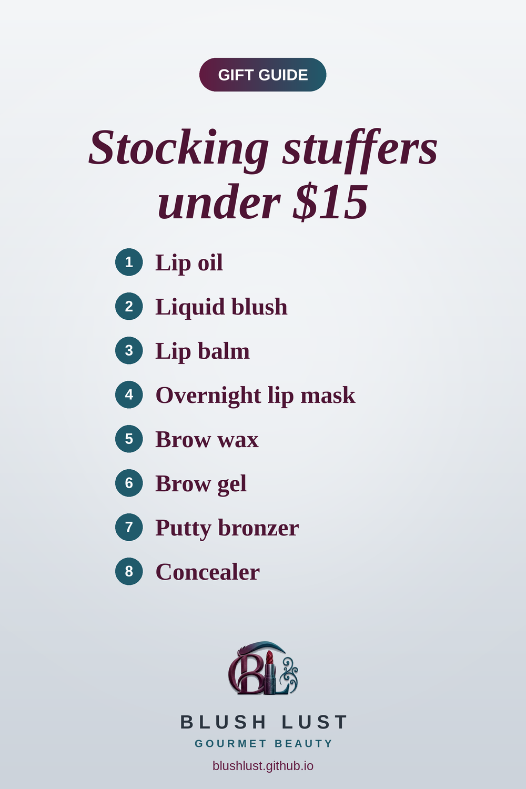

8 Viral Makeup Dupes Under $15 (Stocking Stuffer Edit)
Cult-favourite looks at drugstore prices: easy stocking stuffers for the beauty lover on your list, all on Amazon.ca.
This post contains affiliate links. If you buy through them, we may earn a small commission at no extra cost to you. As an Amazon Associate I earn from qualifying purchases.
NYX Fat Oil Lip Drip
Glossy, cushiony lip oil with a hint of tint. The NYX version is a fan favourite for the same juicy shine.
Shop the dupe on Amazon.ca →e.l.f. Camo Liquid Blush
A tiny dot goes a long way with both. Highly pigmented, blendable cheek colour for that flushed, just-pinched look.
Shop the dupe on Amazon.ca →e.l.f. Squeeze Me Lip Balm
A cushiony, glossy balm in a squeeze tube. Beauty shoppers love the e.l.f. one for the same buttery feel.
Shop the dupe on Amazon.ca →e.l.f. Holy Hydration! Lip Mask
Slather it on before bed and wake up to soft, smooth lips. The e.l.f. version is a fan-favourite budget swap.
Shop the dupe on Amazon.ca →e.l.f. Brow Lift
A clear, sculpting wax that brushes brows up and holds them all day for a fluffy, laminated look.
Shop the dupe on Amazon.ca →e.l.f. Wow Brow Gel
Tinted, fibre-filled brow gel that adds volume and holds brows in place in seconds.
Shop the dupe on Amazon.ca →e.l.f. Putty Bronzer
A soft, blendable bronzer for a natural, sun-kissed warmth.
Shop the dupe on Amazon.ca →e.l.f. Hydrating Camo Concealer
Big doe-foot applicator, serious coverage. The e.l.f. Camo concealer is one of the most talked-about drugstore dupes ever.
Shop the dupe on Amazon.ca →
Prices change often — check Amazon.ca for the current price.